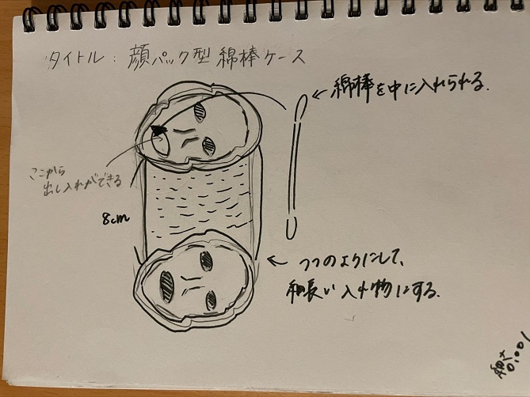

顔パック型 綿棒ケース
作品を作るまでのスケッチの写真

実際に作った作品の画像

＊これは、外側の素材で適しているものを調べるために一度レーザーカッティングしたものです。
これから底の部分と蓋の部分を作る予定…
設計ファイル
載せる予定…
作品の説明
この作品は、綿棒を入れる筒状のケースになっています。
ケースの上と下の部分が顔のケアをする顔のパックの形にしました。
パックの口の部分から綿棒を取り出せるように作りました。
なぜこの作品を作ろうという想いに至ったか…
何か面白くて、人の目に止まるような作品を作りたいと思いました。
自分が生活している中で面白くて参考になるものがないか探していたところ、顔のパックの形に注目しました。
パックをつけた時の、白塗りみたいな状態やホラー感、そしてなんとも言えない面白い形を作品に使ったら、どんなものが作れるのか気になったので、
これに決めました。また、顔をケアするという美容での視点から、なにかコスメなどの収納に使いたいと思ったので、お化粧の手直しに使う綿棒が
顔パックの口から出るという他ではないようなものを作ろうという考えに至りました。
YouTube動画
かなり時間をかけてやってしまった為期限内に終えることができませんでしたが、
今回の課題の制作は続けていきます。